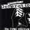

|
 | Reggel benézett hozzám egy régi demoscener barátom,
aki jelenleg egy számítástechnikai boltot működtet. Látogatásának oka, hogy bankban járt, és friss
droidanyagot talált nekünk. Íme.
A karácsonyi roham alatt a bolt kasszájában felgyűlt úgy
másfélmillió forint. Barátom ezt a pénzt szorongatta egy decens kis papírzacsiban, tízezresek,
ötezresek, kétezresek és ezresek gyűjteményeként. Ezt szerette volna beváltani húszezresekre, hogy
egyszerűbben kezelhesse. Ám nem oda Buda: ilyen bravúrra a magyar bankok természetesen nem
képesek. Naná!
Először is bement az Oktogonon a Raiffeisen Bankba, és meglóbálta a
pénztáros kisasszony előtt a pénzköteget. Az csodálkozva nézett, majd közölte, hogy ő bizony ezt
nem válthatja be, mert nem és kész.
- De miért nem? Hát egy bank nem erre való?
- Igen,
de nem lehet, mert ez nincs engedélyezve a bankoknak.
- ???
Jó, ne erőltessük, droid
szegény. Látva a kedves ügyfél lefáradó arckifejezését, a kislány hebegve elrebegte, hogy ha
akarna, se tudná beváltani, mert csak ötven darab húszezrese van, ennyit adnak ki a kasszának
minden nap. Barátom megköszönte, hogy ilyen kényes biztonsági információt megosztott vele, majd
távozott. Na, majd a jó öreg OTP, az ott, szemben!
A zöld cégér azonban még durvább
droidokat rejtett, mint a sárga. Barátom rutinosan a pulthoz lépett, még sorszámot se tépett,
gondolta, előbb megkérdezi, van-e remény bonyolult igénye kielégítésére.
- Jó napot
kívánok. Pénzt szeretnék beváltani, úgy másfél milliót, húszezresekbe.
Hirtelen beállt csend,
pislogás. Hallani, ahogy a fogaskerekek csikorognak.
- Pénzt... szeretne... beváltani? -
kérdezte végül értetlen tekintettel.
- Igen, ha lehetséges.
- Mennyit?
- Másfél milliót.
Tízezres, ötezres, kétezres és ezres címletekben.
- Húszezresbe?
- Igen.
- Nem értem. Egy
húszezrest szeretne?
Anyám, borogass.
- Nem. Másfél milliót szeretnék beváltani
húszezresekre. Az hetven darab húszezres.
- Ööö... hát... nem tudom, lehet-e...
- Miért, hát
ez egy bank, nem?
- De nem tudom... szerintem annak díja van.
- Díja?
- Igen.
- Jó, és
mennyi?
- Hát, azt nem tudom.
- Akkor kérdezze már meg valakitől!
Ekkor már a két
szomszédos pulttól is ide figyeltek, még az ügyfeleket is elfelejtették hívni. A várakozótérben
elrévedt mosollyal üldögéltek a sárgacsekkes nyugdíjasok.
- Mit is mondott, mennyi pénz?
-
Másfél millió!!
Mivel a csaj még mindig bambán bámult - talán nem volt képes felfogni
ekkora összeget - barátom kivette a pénzt a zacskóból, és letette a pultra. Na, erre lett aztán
csend, mintha egy döglött kengurut rakott volna ki. Másfél millió. Hallatlan összeg.
- Na
de ennek díja van! - ocsúdott fel végre a szomszéd asztalnál ülő csaj.
- Jó, akkor mondják meg,
mennyi!
- Hát, azt nem tudjuk.
- Akkor kérdezzék meg valakitől.
A biztonsági őr is
felébredt, odacammogott, és gyanakodva nézte hol a pénzt, hol a kedves ügyfelet.
- Mit nézel,
nem láttál még pénzt? - érdeklődött a barátom. Az őr erre zavarodottan visszaállt a helyére, és
igyekezett másfelé nézni. A csajok közben sorra vettek elő mindenféle vaskos dossziékat, és
keresték, mégis, mi az előírásszerű módja egy rakás pénz beváltásának. Egyszer csak egy középkorú
hölgy került elő valahonnan, és szigorú arccal odébb tolta a lányokat.
- Jó napot. Az
osztályvezető vagyok. Miben segíthetek?
Barátom ismét előadta, mit akar. A hölgy gyanakodva
végigmérte, majd bólintott.
- Rendben. Adja ide azt a pénzt.
- Mi van?
- Adja ide a
pénzt!
- Beváltja?
- Igen, de díja van.
- Mondták már, de mondja már meg, hogy mennyi!
-
Máris megnézem.
A nő fellapozott pár további dossziét, elment, visszajött, ide ment, oda
ment, végül telefonált is, majd visszatért.
- Ez az Ön pénze?
- Persze, hát kié
lenne?
- Ön ügyfele bankunknak?
- Nem.
- Akkor az alapdíj tízezer forint, plusz a beváltott
összeg két százaléka.
- Mi van??
- Az alapdíj tízezer, és...
- Azt értettem, de ugye nem
gondolja komolyan, hogy negyvenezer forintot kifizetek azért, hogy beváltsanak egy összeget?!
-
Hát, kérem, ennyi a szolgáltatás díja...
- Na, szórakozzanak mással.
Azzal sarkon
fordult, és távozott. Kicsit tartott tőle, hogy a biztonsági őr ráugrik, és kihívják a
rendőrséget, de végül nem tették meg. Pedig érezte a hátán a döbbent tekinteteket, ami azoknak jár
ki, akik nagyon-nagyon illetlen dolgot csinálnak valahol.
| | vissza a főoldalra |  |
| 1 2 3 4 5 6 7 8 9 | | | | 

|
 | | | | | | | | | | | | | | | | | | | | 1 2 3 4 5 6 7 8 9 | |
|


túraszervező
túra-rss
mi ez?

legjobbak
legolvasottabbak
tartalomjegyzék
rss feed

AboryM
Caesar
Count Grishnackh
cscsabi
eürdüngh
Feki
GyalogKakukk
Ishukone
Kadzseszka
LACI1993
Mini
Muska
Rommel
Segi
Takezó
tommylee
vikcee
|